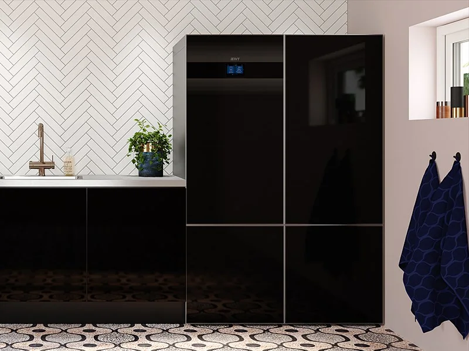
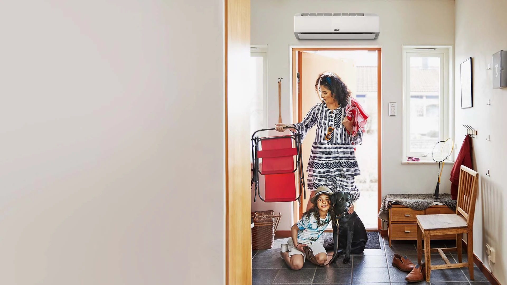
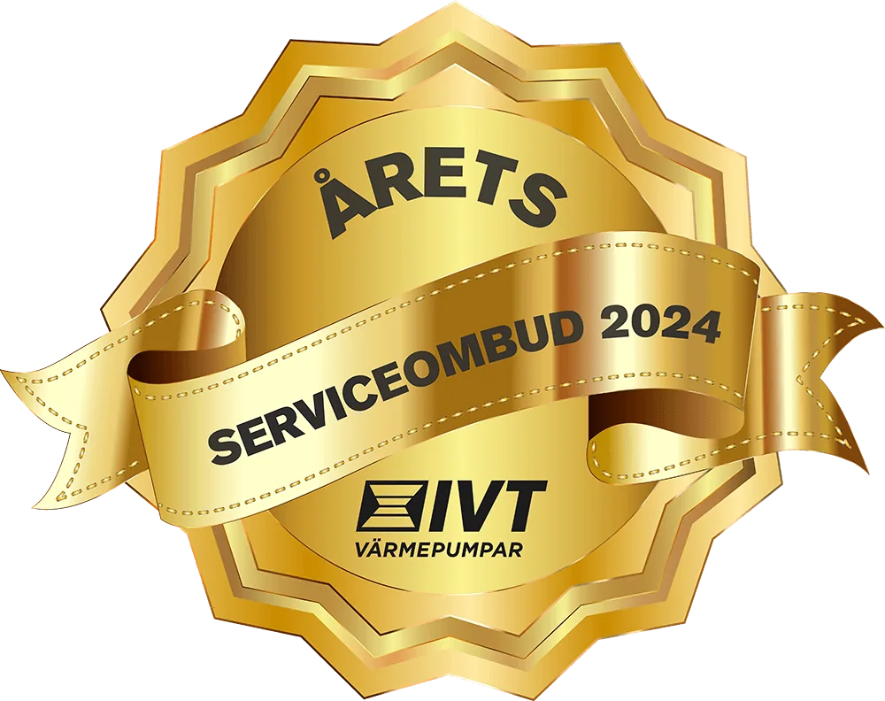
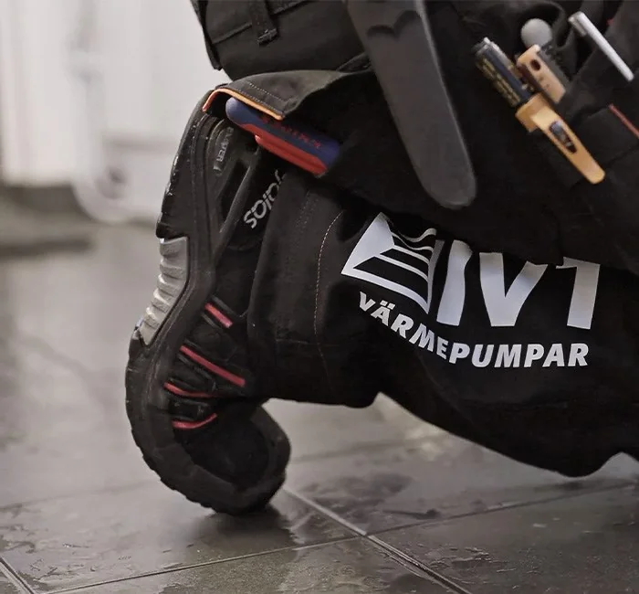

Skönt inne.
Tryggt hela vägen.
Rätt värmepump gör skillnad varje dag. Vi hjälper dig från första hembesöket till installation och service.

Årets serviceombud 2024Utsedda av IVT.Värmen ska bara fungera.
Vi tar hand om resten.
Hos Värmekällan möter du människor som kan värmepumpar. Som IVT Center Väst hjälper vi villaägare, bostadsrättsföreningar och fastighetsägare med kompletta värmelösningar.
Över 30 årav erfarenhet
Sveriges förstaIVT Center
Vilken värme
passar ditt hem?
Det börjar med huset, inte modellen. Utforska alternativen, så hjälper vi dig med resten.

Bergvärme
Ta vara på energin i berget, marken eller sjön. För värme och varmvatten i hela huset.

Luft/vatten
Värme och varmvatten från uteluften. Ett alternativ för hus med vattenburet värmesystem.

Luft/luft
Värme när det är kallt, svalka när det är varmt. Komplettera din befintliga uppvärmning.

Frånluft
Återvinn energin i husets frånluft. Värme, varmvatten och ventilation i samma lösning.

Genomtänkt teknik.
En självklar del av hemmet.
IVT AirX 500 tar tillvara energin i uteluften för att ge huset värme och varmvatten. En genomarbetad lösning, både ute vid fasaden och inne i huset.
- Luft/vattenvärme efter husets behov
- Välj innedel utifrån plats och varmvattenbehov
- Installerad och omhändertagen av Värmekällan
Hitta din nästa
värmepump.
Se alla 10 modeller
Geo 700
Berg-, jord- och sjövärmeBergvärme med naturligt köldmedium, genomarbetad design och alternativ i vitt eller svart.
AirX 500
Luft/vattenvärmeLuft/vattenvärme i stilren design med AirModule eller AirBox som innedel.
Aero 600-1
Luft/luftvärmeVärme och kyla i fyra storlekar. Från den lilla stugan till den större villan.
Vent 402
FrånluftsvärmeVärme, varmvatten och ventilation samlat i en kompakt frånluftsvärmepump.
En trygg kontakt.
Även när värmen stannar.
Vi servar IVT och andra fabrikat. Från regelbunden översyn till reparation hjälper våra servicereparatörer dig att hålla värmepumpen i gott skick.
- Auktoriserad servicepartner för IVT
- Service från Lysekil till Helsingborg
- Jour vid akuta driftstopp
Akut problem? Ring 070-852 05 26.

Se hur det fungerar.
Se IVT:s filmer om värmepumparna. Välj en film när du vill veta mer.
Så fungerar luft/vattenvärme
Filmer hämtas från IVT:s videokällor först när du väljer att spela upp dem.
Förtroende som
värmer.
Några ord från kunder, publicerade på företagets originalsida.
Läs fler kundomdömen”Personlig, snabb och riktigt bra service!”
”Nöjda ☺️ Från första telefonkontakt till färdig installation !”
Nära till kunskapen.
Nära till hjälpen.
Från Göteborg och västkusten till vårt team i Ånge. Hitta rätt kontakt för din ort.